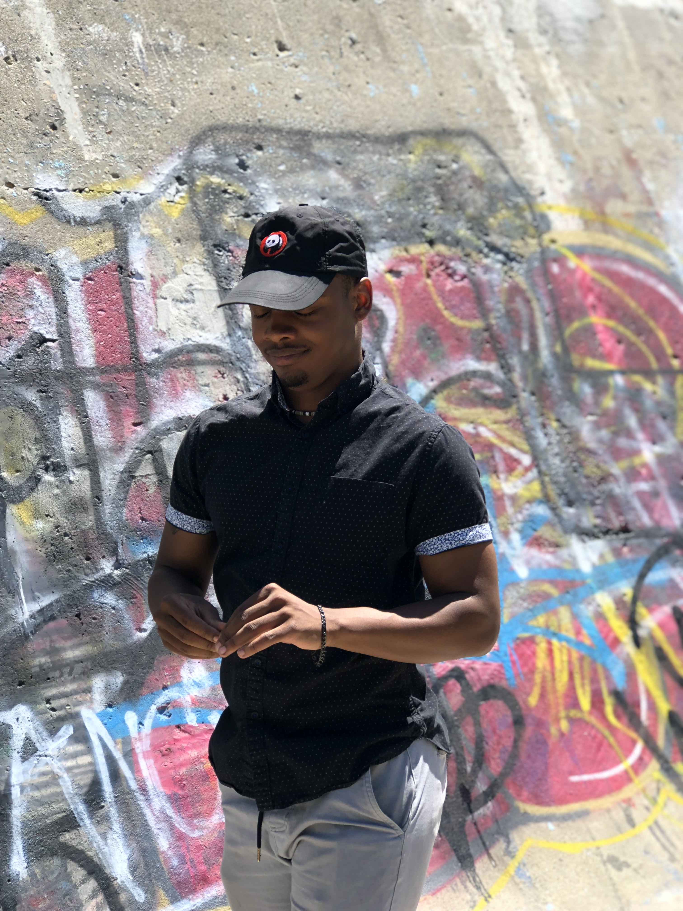

Turk is a multifaceted manager with a passion for ...
Overview
Socials
Instagram
@mainstreamband
Instagram
@turk_the_manager

Turk is a multifaceted manager with a passion for people, music, and making genuine connections. He has been involved with the band since its inception, even providing them with their
first gig in his own backyard. He has been responsible for booking the band at various venues and events such as Kilroy's & The Tap,
and has been a key figure in their upcoming. Turk is also a talented mechanic and has been known to fix the band's vehicles when they require it.